What is Pigeomatic?
Pigeomatic is a game about collecting and breeding digital creatures we call PGNs (pronounced: pigins). PGNs come in a variety of sizes and colors that make them unique. Each one is represented as a NFT on the blockchain guaranteeing ownership and protection against duplication or destruction.
Pigeomatic is a Work in Progress
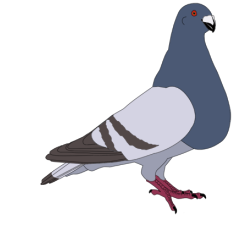
 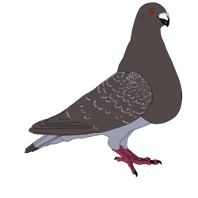
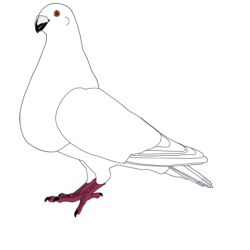
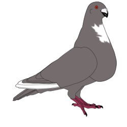
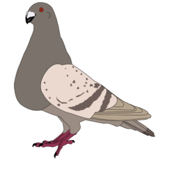
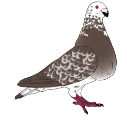
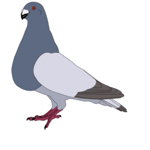
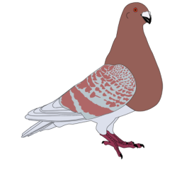
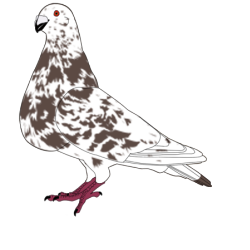
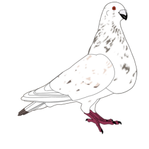
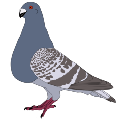
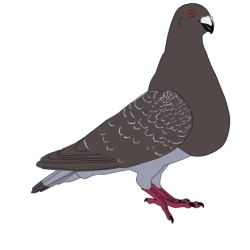
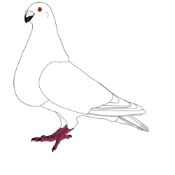
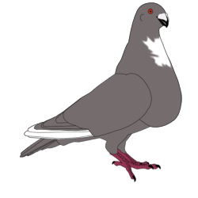
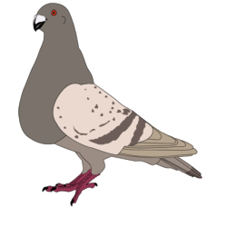
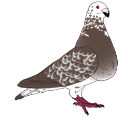
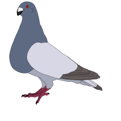
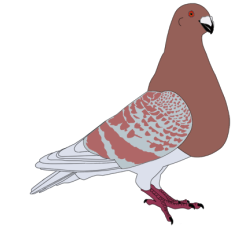
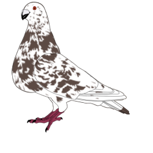
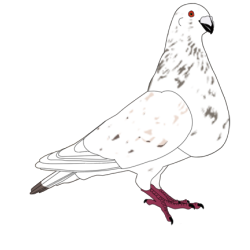
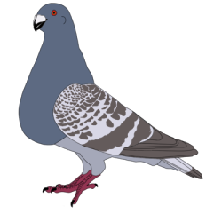
PGNs are either males (cocks) or females (hens) and they can be paired to produce offspring. Each pairing produces two new PGNs called squeakers.
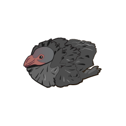
The process of pairing PGNs and producing squeakers takes around a month and uses a simplified model of Mendelian genetics. This model loosely follows real world pigeon genetics that add a level of realism to the game. It all starts when you select two PGNs of opposite sex and lock them in a pairing. For the first 10 days the new paired couple builds a nest. On the 10th day the hen lays the first egg followed by the second egg on the next day. 18 days later the eggs hatch and two new squeakers are produced. In order to simulate all this, paired PGNs remain locked for 30 days. The squeakers are the product of genetic recombination of their parent's DNA. In time, squeakers grow up to be adult PGNs. Sexual maturity is achieved after 6 months at which time they can start breeding. In animal husbandry is common to apply selective breeding techniques to encourage traits that are desirable. Inbreeding and line breeding are usually practiced both of which lock desirable traits. You could potentially star with a single pair and develop your loft by pairing siblings. Ultimately if you want to include more traits you could crossbreed to an unrelated PGN.
Another way to interact with your PGNs is by flying them. Keep in mind that PGNs are based on a real world pigeon breed called Jiennense. This breed was created in Spain at the beginning of the last century. Nowadays you can find them in several European countries, USA, South America and the Caribbean. These pigeons are famous for attracting other pigeons to their loft. Pigeon breeders in a neighborhood release one or two of their best specimens at a time and a battle ensues in the air. Pigeons from other lofts try to seduce your pigeons while your pigeons try to do the same. The pigeons fly together and through air maneuvers they show the others the way to their loft. Ultimately when pigeons land on another loft they get captured by various means including the captured pigeon entering a coop and activating a trap. The are other pigeon breeds that are considered "working" pigeons that do the same and the hobby has fans all around the world. You can see similar behavior in breeds like Laudinos, Valencianos, Morrilleros, Marcheneros, Rafeños, Horseman pouters and others. In Pigeomatic you can lock your PGNs in a fly session for 2 hours. When you try to retrieve your PGN the system will randomly select an opponent, if available, and pit the PGNs' Charisma vs their Loyalty. Charisma and Loyalty are non-visible traits that are tracked by the PGN's DNA. The result of this battle has 2 different outcomes. The battle can be a draw if none of the PGN's charisma is greater than the opponent's loyalty. Otherwise the PGN with the highest charisma difference over the opponent's loyalty wins the battle and its onwer gains the oppossing PGN.
Lastly, like the real animals, PGNs have a lifespan. Based on an ideal maximum of 15 years, all PGNs live a fraction of that. Once the PGN reaches the end of his life the PGN is considered dead and cannot breed or fly anymore.
The Code
Pigeomatic is written in Haskell. PGNs are Cardano native tokens and interaction will be provided through Plutus Smart Contracts. For now only the base library is completed. I'm still in the process of learning Plutus Smart Contracts programming. Although I'm no spring chicken (pigeon?) when it comes to writing code, I'm a complete noob to Haskell. I just learned the language in the last couple of months. As such expect the code to be subpar and criticisms, suggestions, pull requests, code reviews and code contributions are welcomed.
To get an idea of what is currently implemented you could download the code and try it on ghci.
Code is avaliable at 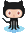Pigeomatic source code
To generate an initial population of PGNs:
-- load the library
ghci> :l Pigeomatic.Pigeon
-- get current time
ghci> now <- getCurrentTime
-- one year ago so generated PGNs are ready to breed
ghci> oneYearAgo = addUTCTime
(-3652460*60) now
-- make a new random number generator using seed 123
ghci> rnd = mkRandom 123
-- generate 1000 random PGNs
ghci> ps = map (\i -> generateRandomPigeon (skipRandom i rnd)
oneYearAgo) [0..999]
-- Take a look at what a PGN looks like internally
ghci> ps !! 0
-- Let's try a pairing by first finding the future parents
ghci> (Just mother, Just father)
= (find (\p -> HEN == pigeonSex p) ps, find (\p -> COCK == pigeonSex p) ps)
-- pair them
ghci> squeakers = pairPigeons rnd now mother father
-- Take a look at your first squeaker
ghci> squeakers !! 0
-- json representation
ghci> encode $ squeakers !! 0
-- notice that pairing takes around 30 days (28 to be exact) so the squeaker is not technically born
yet
ghci> pigeonBirthday $ squeakers !! 0
-- now lets try to visualize the family...
ghci> family = [mother,father] ++ squeakers
-- import ByteString to write json file
ghci> import qualified Data.ByteString.Lazy.Char8 as
LBS
-- write a json representation of the family
ghci> LBS.writeFile
"lambdas/utils/pigeons.json" ((LBS.pack "[") `LBS.append` (LBS.intercalate
(LBS.pack ",") (map encode family)) `LBS.append` (LBS.pack "]"))
-- quit ghci
ghci>:q
Now cd into lambdas directory and execute:
node utils/renderPGNS.js
If you browse to the utils/images directory you should see 4 png images there. The filename corresponds to the PGN id. You can figure out which is which by checking the pigeons.json file that we wrote from ghci. The squeakers get rendered as adults so you can see what they would look like in the future.
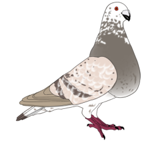 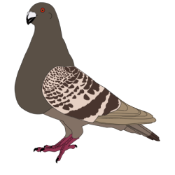 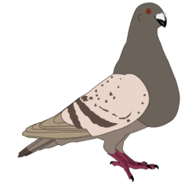 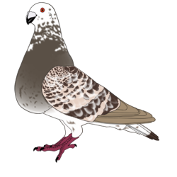
Mother and Father then the children. This time we got both a female and male. Notice than when rendering the PGN's phenotype, the code renders Hens looking to the right of the screen and Cocks looking to the left.
Remember: Pigeomatic is a Work in Progress. Pull requests welcomed.
Happy breeding!